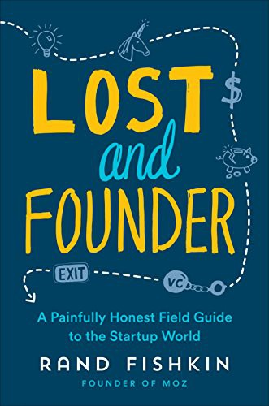

Library › Psychology & People
Lost and Founder: A Painfully Honest Field Guide to the Startup World — Summary & Key Lessons

The Moz founder tells the truths the startup industrial complex sells tickets over: depression, dilution, and the myth of the fundraise.
📖 OPEN THE FULL INTERACTIVE BREAKDOWN →🌐 Read it in Hindi, Hinglish, Gujarati, Tamil & 22 more languages — free, with audio.
💡 The Big Idea
Fishkin (Moz founder, later SparkToro) writes the anti-hero memoir of startup life: crying at his desk twice from stress, the 2013 $18 million round he took for 'pretend growth' (scaling spend without validated unit economics, which he calls his biggest mistake), VC incentive misalignment (funds need outliers, so 'boringly successful' is failure to them), co-founder equity mistakes, hiring-and-firing pain, the myth that founders who raise are winning, and his eventual step-down (the board-pressured exit that he narrates without bitterness but without varnish). The book's purpose: counter-programming the highlight-reel startup culture with the actual distribution of outcomes, so founders can choose deliberately (bootstrapping, small funds, patient growth) instead of defaulting into the venture lottery while thinking it's a career ladder.
🧠 The 8 Key Lessons
Lesson 1: The Fundraise Is Not the Win
Pretend Growth
Moz's $18 million round funded growth economics hadn't validated: hiring ahead of revenue because 'that's what funded startups do', missing projections for years, and spending years paying for the mistake. Fishkin's warning: raising is fuel for a business model you've PROVEN, not a trophy; taking venture money on unproven economics converts your company into a growth-or-die machine regardless of your market's actual shape.
📖 Example: The round's capital went into hiring and marketing that produced growth curves investors praised in board decks while unit economics quietly worsened; the reset (layoffs, refocusing) took years of morale and market position. Read the full example →
⚡ Do this: Before raising, write the sentence: 'With this money, we will spend X to acquire Y at CAC Z, paying back in N months.' If the sentence isn't true from existing data, don't raise yet.
Lesson 2: Venture Incentives Are Not Your Incentives
The Power-Law Game
VCs run power-law portfolios: they need one 100x outlier per fund, so a startup growing steadily to $50 million revenue and a founder keeping control is, to the fund, a mediocre outcome even if it changes YOUR family's life forever. Founders who don't understand this take money whose success conditions they'd never sign up for if stated plainly. The alignment test: ask your investor what THEIR fund's math needs from YOUR company, and believe them.
📖 Example: Fishkin narrates board pressure toward 'grow faster' in years when Moz was profitable and sustainable: not malice, just the fund's arithmetic speaking, which the founder had signed up for without reading the fine print of the model. Read the full example →
⚡ Do this: Interview your prospective investor about their fund's return math. If your realistic best-case doesn't satisfy their model, take less money, no money, or different investors.
Lesson 3: Founder Depression Is the Norm, Not the Exception
The Two Cries
Fishkin opens with his worst moments (crying at his desk, the guilt spiral) precisely to break the isolation: surveys consistently find founders reporting depression and anxiety at multiples of the general rate, yet the highlight-reel culture treats admitting it as weakness. The discipline: normalize the resources (therapy, founder peer groups, exercise minimums) as OPERATIONS, not wellness theater, because your decision quality IS the company's asset.
📖 Example: The most-shared passages of the book are the unglamorous ones: the panic before board meetings, the impostor feelings at conferences, and the relief of discovering every peer had the same ledger. Read the full example →
⚡ Do this: Join one founder peer group (or create a circle of four) this month with a confidentiality rule. Schedule your own therapy or coaching like a board meeting: recurring, protected, non-negotiable.
Lesson 4: Board Seats Are Governance, Not Cheerleading
The Step-Down
Fishkin's board (which he narrates fairly) eventually pressed for a CEO change when the company's growth didn't match the fund's curve: legally and fiduciarily sound, emotionally brutal. Founders who raise institutional money must understand: board seats are control instruments, and the CEO's job is retained only while the numbers satisfy the mandate. If you want control, that's a financing choice (bootstrap, small checks, protective terms), not a personality trait.
📖 Example: The step-down chapter's calm tone is its power: no villain, just diverging definitions of success meeting in a boardroom where votes, not effort, decide. Read the full example →
⚡ Do this: Before any round, model the two board scenarios (you hitting plan, you missing plan twice). If you'd fight the second outcome, negotiate control terms now or take less money.
Lesson 5: Hire Slow, Fire Fast, and Never Confuse the Two
The Team Pain
Fishkin's hiring failures (friends hired for comfort, slow firing of misfits out of guilt) cost Moz quarters of momentum and months of team trust. His rules: hire against written scorecards, try-out projects where possible, and when it's not working, end it in days with generosity, because a misfit's tenure taxes everyone who stays. The reverse (fast hiring, slow firing) is the startup default and the opposite of what works.
📖 Example: The book's firing stories end with relief on BOTH sides more often than regret, the pattern every experienced manager confirms and every first-time founder refuses to believe. Read the full example →
⚡ Do this: Write scorecards for your next three hires (outcomes, competencies, values) and set a 30-day check-in with explicit pass/fail. For the person you already know isn't working: schedule the conversation this week.
Lesson 6: Bootstrapping Is a Strategy, Not a Consolation Prize
The Road Not Taken
Fishkin's clear-eyed epilogue: for most businesses, bootstrapping (or tiny angel rounds) produces better founder lives and often better companies, because the business grows at the speed of validated demand and the founder keeps control. The venture path is for specific games (winner-take-most markets, capital-heavy moats) that most startups flatter themselves into. Choosing is the point; defaulting is the trap.
📖 Example: His post-Moz company (SparkToro) deliberately bootstrapped with small checks, publishing its numbers openly, the practical application of every lesson in the book. Read the full example →
⚡ Do this: Write down which game your startup is actually in (venture-scale winner-take-most, or sustainable profitable business). Let the answer pick your financing, not your Twitter feed.
Lesson 7: Transparency Is a Trust Multiplier When It's Real
Open Numbers
Moz's public revenue reporting and Fishkin's honest post-mortems built unusual market trust (customers and candidates could see reality), but the book also shows transparency's cost: competitors read your numbers, and employees feel every downturn publicly. The discipline: transparency works when it's decision-useful (numbers, mistakes, reasoning) rather than performative (value posters); publish what helps customers and candidates decide, not what flatters you.
📖 Example: Candidates who joined citing the public numbers arrived pre-aligned with reality, cutting the expectation-mismatch churn that kills teams raised on pitch-deck optimism. Read the full example →
⚡ Do this: Publish one real number about your business this month (revenue range, churn, NPS) with two sentences of honest context. Repeat quarterly; watch candidate quality shift.
Lesson 8: The Myth Sells Tickets; the Distribution Pays Salaries
The Highlight-Reel Economy
The book's meta-argument: the startup industrial complex (conferences, media, investor marketing) amplifies outlier stories because outliers sell, leaving founders calibrating their curves against survivorship. The protective habit: read base rates (most startups don't raise, most that raise don't exit, most exits aren't unicorns), then set YOUR goals against reality, not against the keynote circuit.
📖 Example: Fishkin cites the actual distributions (unicorn odds, funding rates) beside the media diet founders consume; the gap is the anxiety engine the book exists to disarm. Read the full example →
⚡ Do this: Write your personal definition of startup success (income, autonomy, impact) and date it. Compare every opportunity against YOUR definition for one year before revising it.
✅ 5-Step Action Plan
- Write the spend-to-return sentence before any fundraise; don't raise without it.
- Ask investors what their fund math needs; believe the answer.
- Join a founder peer group and protect therapy like a board meeting.
- Model both board scenarios (hit plan, miss plan) before signing terms.
- Write scorecards for next hires and schedule the hard conversation you're avoiding.
⚠️ When This Doesn't Work
This is Fishkin's memoir of Moz through 2018: Moz's own numbers and board dynamics are his telling (the company's side is respectful but absent), and the anti-VC framing, while honest, is one founder's sample of one fund relationship. Post-book developments (his SparkToro success, ongoing transparency) support the thesis. Read it as the corrective lens the startup media doesn't sell, especially if you're about to sign a term sheet.
💀 The Graveyard Proves It
📱 Quibi — $1.75 Billion, Six Months, Gone. Burn: $1.75B in 6 months. Read the full case study →
💬 Best Quotes from Lost and Founder: A Painfully Honest Field Guide to the Startup World
- “The startup world rewards the people who tell the biggest lies about their progress.”
- “Venture capital is rocket fuel, and most startups don't have a rocket. They have a really nice car.”
- “I cried at my desk twice. Both times I thought I was the only founder who'd ever done that. I was wrong.”
Interactive version: mark lessons as read, listen in your language, share quote cards.